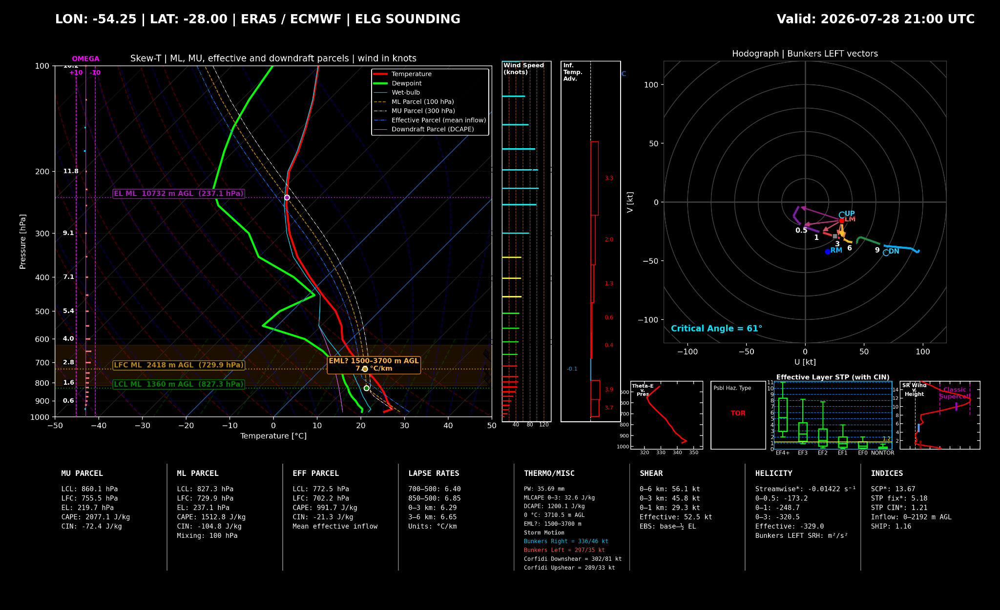

Skew‑T
Temperature, dewpoint, wet-bulb, ML, MU, effective and downdraft parcels.
Generate historical Skew‑T soundings, hodographs and severe-weather diagnostics directly from Copernicus ERA5 data.
Temperature, dewpoint, wet-bulb, ML, MU, effective and downdraft parcels.
Bunkers motions, Corfidi vectors, critical angle and storm-relative diagnostics.
CAPE, CIN, STP, SCP, SHIP, shear, helicity, lapse rates and DCAPE.
Historical profiles downloaded directly from Copernicus Climate Data Store.
Map-based coordinate selection, hourly navigation, zoom, pan and PNG export.
The application calculates and renders the sounding on your device.

Install the desktop application and connect your own free Copernicus CDS account from the ERA 5 account screen.